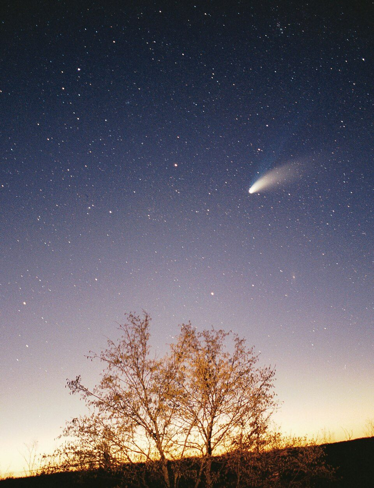

Asteroids, comets and meteorites
The leftover pieces of the solar system: rocks, dirty snowballs and the shooting stars that fall every night.


Besides the Sun, the planets and their moons, the solar system is full of small bodies: leftovers of the building blocks the planets were made from. Studying them is like opening a time capsule from 4.6 billion years ago.
Asteroids
Asteroids are rocky or metallic bodies, from a few metres to hundreds of kilometres across. More than 1.4 million have been catalogued. Most are found in the asteroid belt, between Mars and Jupiter, where the giant's gravity stopped them from forming a planet. Even so, they are far apart: if you travelled through the belt, you probably would not see a single one with the naked eye.
The largest is Ceres, classed as a dwarf planet. Next come Vesta, with a 22 km mountain at its south pole, and Pallas. Some asteroids have moons of their own, like Ida with little Dactyl.


Samples brought to Earth
Japan brought back dust from asteroid Itokawa (2010) and from Ryugu (2020) with its Hayabusa probes. In 2023 NASA returned about 120 grams of asteroid Bennu with the OSIRIS-REx probe. Amino acids and salts formed in water have been found in them: some of the ingredients of life may have reached Earth aboard asteroids.
Comets
Comets are dirty snowballs of ice, dust and rock a few kilometres across. They come from the most distant regions of the solar system, the Kuiper belt and the Oort cloud. When one approaches the Sun, its ice turns to gas and forms a bright coma and two tails that can stretch for millions of kilometres: a curved dust tail and a gas tail that always points away from the Sun.
- Halley's comet returns every 76 years. Its last visit was in 1986 and the next will be in 2061.
- Hale–Bopp was visible to the naked eye for 18 months in 1996 and 1997.
- In 2014 Europe's Rosetta probe went into orbit around comet 67P and dropped the Philae lander onto it, the first landing on a comet.


Meteors and meteorites
When a small fragment of rock enters the atmosphere at tens of kilometres per second, it heats up and leaves a glowing trail: a meteor or shooting star. If a piece survives and reaches the ground it is called a meteorite. Meteor showers, like the Perseids in August, happen when Earth crosses the trail of dust left by a comet.
When they fall from the sky
- 66 million years ago, an asteroid about 10 km wide struck the Yucatán peninsula (Mexico), formed the Chicxulub crater and caused the extinction of the non-avian dinosaurs.
- In 1908, an object exploded over Tunguska (Siberia) and flattened 2,000 km² of forest.
- In 2013, a 20-metre meteor burst over Chelyabinsk (Russia); the shock wave shattered thousands of windows.
Planetary defence
In September 2022, NASA's DART mission deliberately crashed into the small asteroid Dimorphos and changed its orbit: the first time humanity moved a celestial body. Europe's Hera mission arrives in 2026 to study the result. Asteroid Apophis, 340 metres wide, will pass just 32,000 km from Earth on 13 April 2029, closer than some satellites, with no risk of impact.
Videos to understand it better
- Asteroids: Crash Course Astronomy #20CrashCourse · 1.3M views
Videos are from YouTube and belong to their creators. They only load when you click them. See all videos →